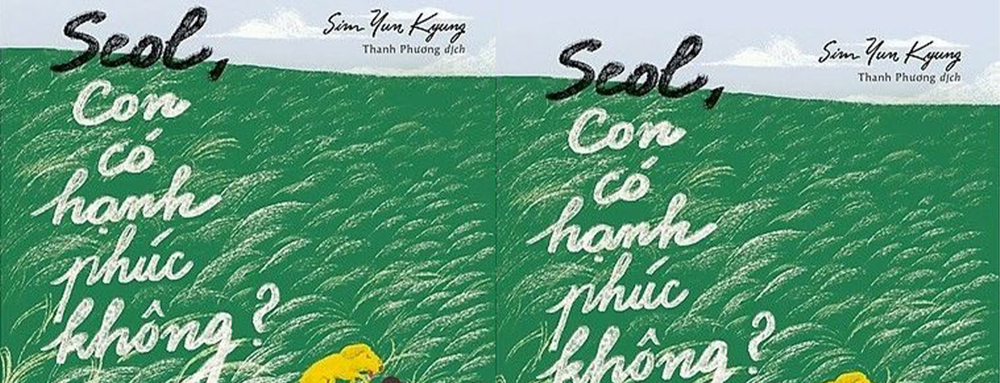

CON CÓ HẠNH PHÚC KHÔNG
Tác giả: Sim Yun Kyung
Giá: 150.000 VNĐ
Tác giả: Sim Yun Kyung
Mười hai năm trước, Seol được phát hiện bị bỏ rơi trong thùng rác vào buổi sáng đầu tiên của năm mới. Trong hành trình tìm kiếm một gia đình cho riêng mình, sau ba lần được nhận nuôi rồi bị từ chối, cô bé trở nên gai góc và luôn hoài nghi sâu sắc về bản chất của tình yêu thương. Dẫu vậy, vẫn có một thứ tình yêu khiêm nhường và mộc mạc, trước sau như một lặng lẽ ở bên, xoa dịu tâm hồn đầy tổn thương của Seol…


Minh Quân15/3/2021